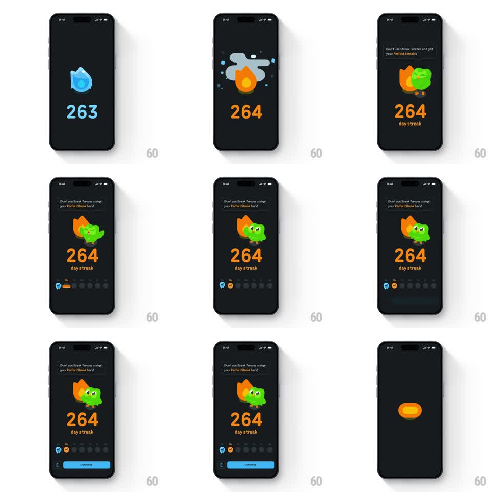

Media
Frame-by-frame

Rebuild this interaction 1:1: Duolingo's streak freeze screen - the streak flame alternates between frozen (ice cubes, sleeping "z") and lit (Duo hugging it) while the week row of day dots fills in and the Continue button slides up.

Rebuild this interaction 1:1: Duolingo's streak freeze screen - the streak flame alternates between frozen (ice cubes, sleeping "z") and lit (Duo hugging it) while the week row of day dots fills in and the Continue button slides up. ## Integration Integration: stack-agnostic spec - springs given as stiffness/damping, timed motions as duration + curve; map every value to your framework and animation library of choice. ## Scene Dark navy screen: top banner "Don't use Streak Freezes and get your Perfect Streak back!"; center stage the streak flame with "264 / day streak" in big orange below it; a week row of seven day dots; a blue Continue button pinned at the bottom. Frozen state: flame encased in ice cubes with "26z" in ice-blue and floating Z's. Lit state: Duo hugs the flame from the side. ## Motion spec Pattern: two-state streak flame with staged screen build. - The screen builds top-down: banner slides down (250ms, ease-out), the flame pops in (scale 0.6 -> 1, spring ~300/14 with overshoot), the number counts up to 264 (600ms, ease-out digit roll), day dots fill left to right (80ms stagger, each popping scale 0 -> 1 with a flame or freeze icon). - Frozen -> lit: ice cubes crack off the flame (shards fly out, 300ms, gravity), the "z" letters float up and fade, the flame reignites (scale 0.8 -> 1.1 -> 1, spring) and Duo slides in from the right hugging it (translateX 40 -> 0, spring ~280/16). - The flame then idles with a gentle flicker (scaleY 1 +/- 0.03, 600ms loop). - Continue slides up and fills blue last (200ms). ## Calibration - The number is the hero - oversized orange numerals; everything else supports it. - Frozen blue and lit orange never mix on the flame at the same time; the transition is a full state swap. ## Reduced motion Flame crossfades between states (250ms); day dots fade without pop; no shard flight. ## Don't miss - Duo is already mid-hug when he enters - the pose never breaks. - The last day dot fills with a slightly bigger pop (scale 1.3 overshoot) to mark today.